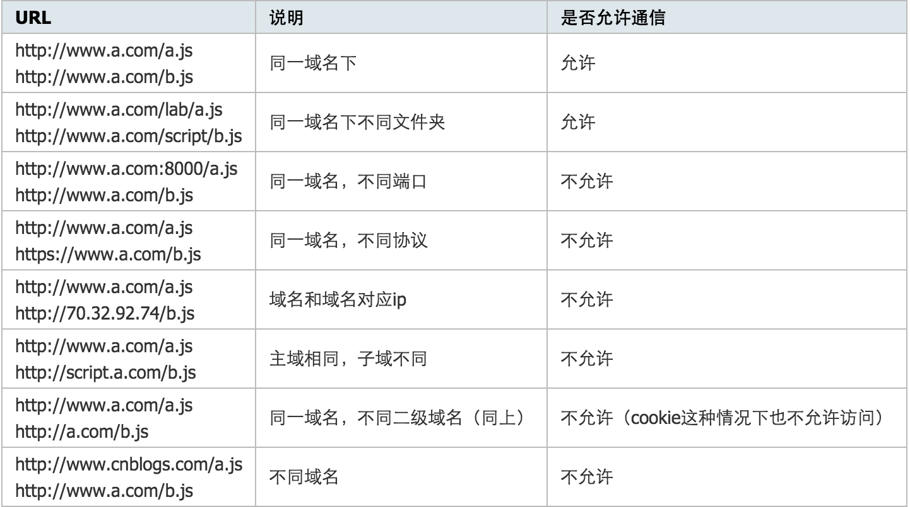

JavaScript跨域总结与解决办法
1. 什么是跨域
JavaScript出于安全方面的考虑，不允许跨域调用其他页面的对象。但在安全限制的同时也给注入iframe或是ajax应用上带来了不少麻烦。这里把涉及到跨域的一些问题简单地整理一下：
首先什么是跨域，简单地理解就是因为JavaScript同源策略的限制，a.com 域名下的js无法操作b.com或是c.a.com域名下的对象。更详细的说明可以看下表：  特别注意两点：
- 如果是协议和端口造成的跨域问题“前台”是无能为力的，
- 在跨域问题上，域仅仅是通过“URL的首部”来识别而不会去尝试判断相同的ip地址对应着两个域或两个域是否在同一个ip上。
“URL的首部”指window.location.protocol +window.location.host，也可以理解为“Domains, protocols and ports must match”。
2. document.domain+iframe的设置
对于主域相同而子域不同的例子，可以通过设置document.domain的办法来解决。
具体的做法是可以在http://www.a.com/a.html和http://script.a.com/b.html两个文件中分别加上document.domain = ‘a.com’；
然后通过a.html文件中创建一个iframe，去控制iframe的contentDocument，这样两个js文件之间就可以“交互”了。当然这种办法只能解决主域相同而二级域名不同的情况，如果你异想天开的把script.a.com的domian设为alibaba.com那显然是会报错地！代码如下：
www.a.com上的a.html
document.domain = 'a.com';
var ifr = document.createElement('iframe');
ifr.src = 'http://script.a.com/b.html';
ifr.style.display = 'none';
document.body.appendChild(ifr);
ifr.onload = function(){
var doc = ifr.contentDocument || ifr.contentWindow.document;
// 在这里操纵b.html
alert(doc.getElementsByTagName("h1")[0].childNodes[0].nodeValue);
};script.a.com上的b.html
document.domain = 'a.com';这种方式适用于{www.kuqin.com, kuqin.com, script.kuqin.com, css.kuqin.com}中的任何页面相互通信。
备注：某一页面的domain默认等于window.location.hostname。主域名是不带www的域名，例如a.com，主域名前面带前缀的通常都为二级域名或多级域名，例如www.a.com其实是二级域名。 domain只能设置为主域名，不可以在b.a.com中将domain设置为c.a.com。
问题：
- 安全性，当一个站点（b.a.com）被攻击后，另一个站点（c.a.com）会引起安全漏洞。
- 如果一个页面中引入多个iframe，要想能够操作所有iframe，必须都得设置相同domain。
3. 动态创建script
虽然浏览器默认禁止了跨域访问，但并不禁止在页面中引用其他域的JS文件，并可以自由执行引入的JS文件中的function（包括操作cookie、Dom等等）。根据这一点，可以方便地通过创建script节点的方法来实现完全跨域的通信。具体的做法可以参考YUI的Get Utility
这里判断script节点加载完毕还是蛮有意思的：ie只能通过script的readystatechange属性，其它浏览器是script的load事件。以下是部分判断script加载完毕的方法。
js.onload = js.onreadystatechange = function() {
if (!this.readyState || this.readyState === 'loaded' || this.readyState === 'complete') {
// readyState返回document的加载状态
// callback在此处执行
js.onload = js.onreadystatechange = null;
}
};4. 利用iframe和location.hash
这个办法比较绕，但是可以解决完全跨域情况下的脚步置换问题。原理是利用location.hash（返回一个DOMString包含片段标识符“#”紧随其后的URL）来进行传值。
- 在url： http://a.com#helloword中的‘#helloworld’就是location.hash，改变hash并不会导致页面刷新，所以可以利用hash值来进行数据传递，当然数据容量是有限的。
- 假设域名a.com下的文件cs1.html要和cnblogs.com域名下的cs2.html传递信息，cs1.html首先创建自动创建一个隐藏的iframe，iframe的src指向cnblogs.com域名下的cs2.html页面，这时的hash值可以做参数传递用。
- cs2.html响应请求后再将通过修改cs1.html的hash值来传递数据（由于两个页面不在同一个域下IE、Chrome不允许修改parent.location.hash的值，所以要借助于a.com域名下的一个代理iframe；Firefox可以修改）。同时在cs1.html上加一个定时器，隔一段时间来判断location.hash的值有没有变化，一点有变化则获取获取hash值。代码如下：
先是a.com下的文件cs1.html文件：
function startRequest(){
var ifr = document.createElement('iframe');
ifr.style.display = 'none';
ifr.src = 'http://www.cnblogs.com/lab/cscript/cs2.html#paramdo';
document.body.appendChild(ifr);
}
function checkHash() {
try {
var data = location.hash ? location.hash.substring(1) : '';
if (console.log) {
console.log('Now the data is '+data);
}
} catch(e) {};
}
setInterval(checkHash, 2000);cnblogs.com域名下的cs2.html:
//模拟一个简单的参数处理操作
switch(location.hash){
case '#paramdo':
callBack();
break;
case '#paramset':
//do something……
break;
}
function callBack(){
try {
parent.location.hash = 'somedata';
} catch (e) {
// ie、chrome的安全机制无法修改parent.location.hash，
// 所以要利用一个中间的cnblogs域下的代理iframe
var ifrproxy = document.createElement('iframe');
ifrproxy.style.display = 'none';
ifrproxy.src = 'http://a.com/test/cscript/cs3.html#somedata'; // 注意该文件在"a.com"域下
document.body.appendChild(ifrproxy);
}
}a.com下的域名cs3.html
//因为parent.parent和自身属于同一个域，所以可以改变其location.hash的值
parent.parent.location.hash = self.location.hash.substring(1);当然这样做也存在很多缺点，诸如数据直接暴露在了url中，数据容量和类型都有限等……
5. window.name实现的跨域数据传输
有三个页面：
- a.com/app.html：应用页面。
- a.com/proxy.html：代理文件，一般是一个没有任何内容的html文件，需要和应用页面在同一域下。
b.com/data.html：应用页面需要获取数据的页面，可称为数据页面。 实现起来基本步骤如下：
在应用页面（a.com/app.html）中创建一个iframe，把其src指向数据页面（b.com/data.html）。 数据页面会把数据附加到这个iframe的window.name上，data.html代码如下：
window.name = 'I was there!'; // 这里是要传输的数据，大小一般为2M，IE和firefox下可以大至32M左右 // 数据格式可以自定义，如json、字符串在应用页面（a.com/app.html）中监听iframe的onload事件，在此事件中设置这个iframe的src指向本地域的代理文件（代理文件和应用页面在同一域下，所以可以相互通信）。app.html部分代码如下：
var state = 0, iframe = document.createElement('iframe'), loadfn = function() { if (state === 1) { var data = iframe.contentWindow.name; // 读取数据 alert(data); //弹出'I was there!' } else if (state === 0) { state = 1; iframe.contentWindow.location = "http://a.com/proxy.html"; // 设置的代理文件 } }; iframe.src = 'http://b.com/data.html'; if (iframe.attachEvent) { iframe.attachEvent('onload', loadfn); } else { iframe.onload = loadfn; } document.body.appendChild(iframe);获取数据以后销毁这个iframe，释放内存；这也保证了安全（不被其他域frame js访问）。
iframe.contentWindow.document.write(''); iframe.contentWindow.close(); document.body.removeChild(iframe);
总结起来即：iframe的src属性由外域转向本地域，跨域数据即由iframe的window.name从外域传递到本地域。这个就巧妙地绕过了浏览器的跨域访问限制，但同时它又是安全操作。
6. 使用HTML5 postMessage
HTML5中最酷的新功能之一就是 跨文档消息传输Cross Document Messaging。下一代浏览器都将支持这个功能：Chrome 2.0+、Internet Explorer 8.0+, Firefox 3.0+, Opera 9.6+, 和 Safari 4.0+ 。 Facebook已经使用了这个功能，用postMessage支持基于web的实时消息传递。
otherWindow.postMessage(message, targetOrigin);
- otherWindow: 对接收信息页面的window的引用。可以是页面中iframe的contentWindow属性；
- window.open的返回值；通过name或下标从window.frames取到的值。
- message: 所要发送的数据，string类型。
- targetOrigin: 用于限制otherWindow，
*表示不作限制
a.com/index.html中的代码：
<iframe id="ifr" src="b.com/index.html"></iframe>
<script type="text/javascript">
window.onload = function() {
var ifr = document.getElementById('ifr');
var targetOrigin = 'http://b.com'; // 若写成'http://b.com/c/proxy.html'效果一样
// 若写成'http://c.com'就不会执行postMessage了
ifr.contentWindow.postMessage('I was there!', targetOrigin);
};
</script>b.com/index.html中的代码：
window.addEventListener('message', function(event){
// 通过origin属性判断消息来源地址
if (event.origin == 'http://a.com') {
alert(event.data); // 弹出"I was there!"
alert(event.source); // 对a.com、index.html中window对象的引用
// 但由于同源策略，这里event.source不可以访问window对象
}
}, false);